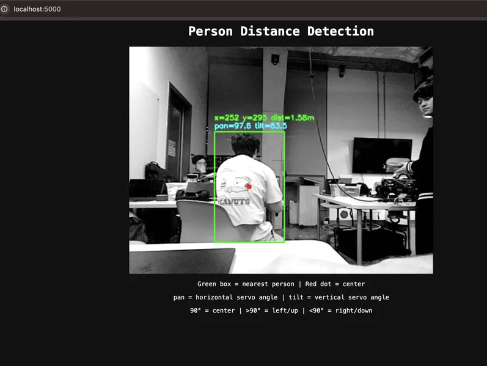
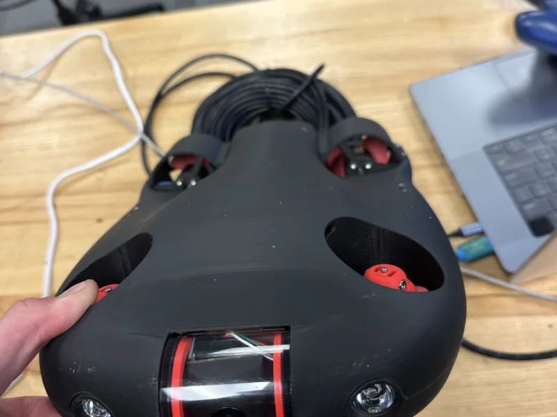

California
Halvor Hafnor
Embedded & applied ML engineer. I build machine learning pipelines that run on real hardware and real sensor data at Aerendir Mobile, alongside a master’s in computer engineering at UC San Diego.
About
I'm a computer engineering master’s student at UC San Diego working at the intersection of embedded systems and applied machine learning. I'm especially interested in how technical systems translate into practical products, through clear requirements, usability considerations, and cross-disciplinary communication.
Away from work I read philosophy, play soccer, play chess, and get out camping and hiking when I can, and I do my own mechanical work on cars and motorcycles.
- Focus Embedded software, machine learning, sensors and biometrics
- Languages English, Norwegian, Spanish
- Honors Tau Beta Pi, Provost Honors every quarter at UC San Diego
Experience
-
Embedded Software and ML Engineer
- Trained classifiers in scikit-learn on inertial sensor data, from feature engineering through to models small enough to run on the sensor itself.
- Built the collection and conversion tooling around ST sensor hardware, turning raw datalogger output into labelled datasets a model can be trained on.
- Evaluation and hardening of the motion-sensor classifiers behind A-Live, the anti-bot liveness check, building the harness that measures what each change actually does.
- Android applications for real-time biometric sensing, data streaming and workflow control.
- C++ and QML software on Linux-based phones interfacing with sensors and ML inference components.
- Named inventor on a pending patent application covering automotive biometrics and driver monitoring.
-
Teaching Assistant and Tutor
- Teaching assistant for computer science courses in C++, Java and x86 assembly, covering object-oriented design and manual memory management in the high-level languages, and the register and instruction model underneath them in assembly.
- Ran office hours as working debugging sessions, reading compiler errors and tracing logic faults alongside students rather than handing back corrected code.
- Tutored calculus, physics and discrete mathematics, one-on-one and in groups, across a wide range of starting proficiency.
- Taught the approach rather than the answer, so the method carried to the next problem.
-
Electrical Technician
- Three consecutive summer internships supporting electrical manufacturing and control system assembly for industrial clients.
- Assembled and wired around 300 industrial control panels and power distribution cabinets from engineering schematics, with QA testing and fault debugging before delivery.
- Mentored incoming interns and improved onboarding through shared best practices.
-
Data Management Intern
- Migrated legacy technical data to updated digital systems, including cleaning, formatting and verification.
- Organized documentation supporting internal engineering and operations.
Projects
-
Vibration-based hands on the wheel classifier
AerWheelAerendir Mobile
Fitted a Tesla steering wheel with an STMicroelectronics LSM6DSV16X six-axis IMU sampling at 240 Hz, and trained decision-tree classifiers in scikit-learn to tell from the micro-vibrations of a driver's grip whether their hands were on the wheel, reported live on an indicator light. It ran first through ST's own on-sensor Machine Learning Core, then as an external tree in the sensor's firmware, so there is no camera, no separate processor and nothing the driver has to do deliberately. Better than 99% accuracy at under 0.5% false positives, answering within 1.5 seconds. Built with one other engineer, and the subject of the pending patent application I am named on.
-
TabTerm
SourcePersonal project
A macOS terminal built as a Chrome extension over a background daemon. The daemon owns the shell processes, the extension owns the views, and the result is that every terminal is an ordinary Chrome tab. All of Chrome's tab machinery then applies to terminals for free: keyboard shortcuts, groups, pinning, moving between windows, reopening from history. That shape also leaves room for things a terminal window has nowhere to put, so there is a command launcher, search across everything you have ever run, saved commands scoped to the project you are in, workspace templates, splits, and a live view of the local servers you have going. Processes outliving their tabs falls out of the daemon owning them, rather than being the point.
-
A 400-person biometric motion dataset
Aerendir Mobile
Collected and classified the motion dataset behind Aerendir's biometric authentication work. 400 participants, each recorded holding the phone in three postures, sitting, standing and walking, from the accelerometer and gyroscope. The variety is the point, because a model that only recognizes you sitting perfectly still is no use in a pocket.
-
Self-driving car, and a laser that follows you
SourceUC San Diego, ECE 148
Built a small autonomous car on a Raspberry Pi 5, wiring the drive, sensing and compute together and getting them to work as one vehicle. On top of the course work we added a laser targeting system of our own. YOLOv8 finds the people in frame, an OAK-D stereo camera puts a distance on each of them, and the nearest one is turned from a pixel position into pan and tilt angles through the camera's field of view, so two servos hold a laser pointer on that person while they move. Depth is sampled as the median of a small patch rather than a single pixel, since one bad reading is enough to throw the aim off. It streams what the camera sees to a browser while it tracks.

-
Tryton, a subsea ROV
Project pageUC San Diego
A modular, low cost underwater ROV with a 3D printed frame inside an acrylic pressure tube, driven by five thrusters and flown from a USB game controller with live video coming back over Ethernet from a Raspberry Pi camera. A Pixhawk running ArduPilot holds position using a depth sensor and an IMU. I did the electrical side, sensor wiring, the LiPo power system and ESC integration. Team of three.

Education
-
MS, Computer Engineering
Graduate work in computer engineering, focused on embedded systems and machine learning.
-
BS, Computer Engineering
3.9 / 4.0
-
Computer Science & Engineering
4.0 / 4.0
Interests
-
Applied machine learning
What happens to a model once it leaves clean data and meets the world.
-
Signal processing
Pulling structure out of measurements that arrive noisy and unlabeled.
-
Embedded engineering
Software written close enough to the hardware that its limits matter.
Loading…